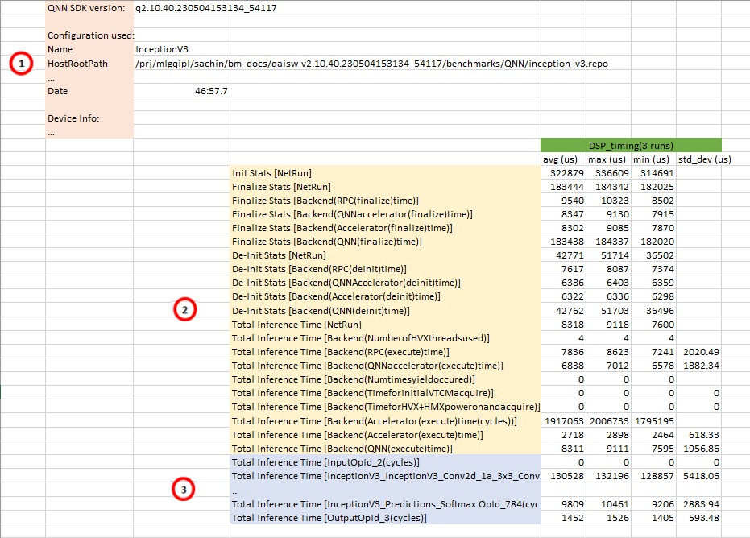
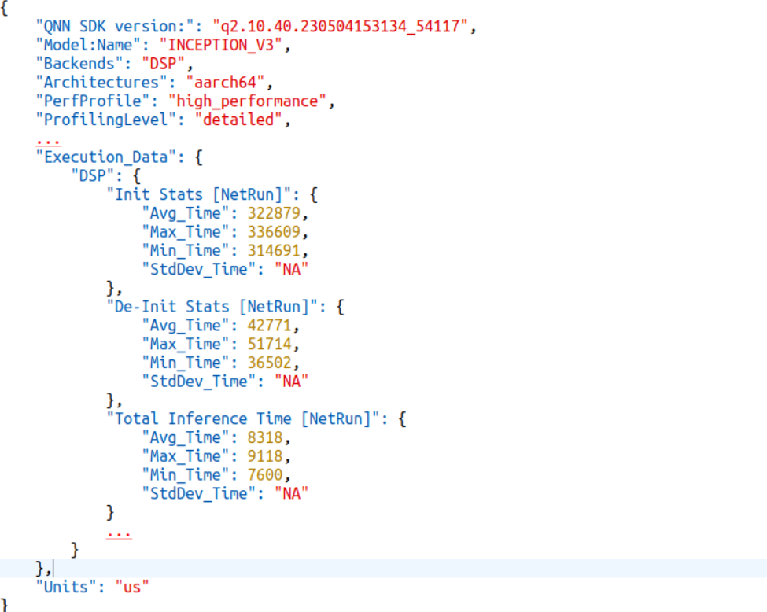

Benchmarking¶
Overview¶
The benchmark shipped in the Qualcomm® AI Engine Direct SDK consists of a set of python scripts that runs a network on a target device and collects performance metrics. It uses executables and libraries found in the SDK package to run a compiled ‘’model.so’’ file on the target, using a set of inputs for the network, and a file that points to that set of inputs.
The input to the benchmark scripts is a configuration file in JSON format. The SDK ships with a configuration file for running the InceptionV3 model that is created following instructions in the SDK documentation. The SDK users are encouraged to create their own configuration files and use the benchmark scripts to run on target devices to collect timing measurements.
The configuration file allows the user to specify:
Name of the benchmark (i.e., InceptionV3)
Host path to use for storing results
Device paths to use (where to push the necessary files for running the benchmark)
Device to run the benchmark on (only one device is supported per run)
Hostname/IP of the remote machine to which devices are connected
Number of times to repeat the run
Model specifics (name, location of ‘’model.so’’, location of inputs, etc.)
QNN backend configuration(s) to use (combination of CPU, GPU, and DSP)
Measurements to take (“timing”)
Profiling level of measurements (“basic” or “detailed”)
Command line parameters¶
To see all available command line parameters use the “-h” option when running qnn_bench.py.
usage: qnn_bench.py [-h] -c CONFIG_FILE [-o OUTPUT_BASE_DIR_OVERRIDE]
[-v DEVICE_ID_OVERRIDE] [-r HOST_NAME]
[-t DEVICE_OS_TYPE_OVERRIDE] [-d] [-s SLEEP]
[-n ITERATIONS] [-p PERFPROFILE]
[--backend_config BACKEND_CONFIG] [-l PROFILINGLEVEL]
[-json] [-be BACKEND [BACKEND ...]] [--htp_serialized]
[--dsp_type {v65,v66,v68,v69,v73,v75}]
[--arm_prepare] [--use_signed_skel] [--discard_output]
[--test_duration TEST_DURATION] [--enable_cache]
[--shared_buffer] [--clean_artifacts] [--cdsp_id {0,1}]
Run the qnn_bench
required arguments:
-c CONFIG_FILE, --config_file CONFIG_FILE
Path to a valid config file
Refer to sample config file config_help.json present at <SDK_ROOT>/benchmarks/QNN/
to know details on how to fill parameters in config file
optional arguments:
-o OUTPUT_BASE_DIR_OVERRIDE, --output_base_dir_override OUTPUT_BASE_DIR_OVERRIDE
Sets the output base directory.
-v DEVICE_ID_OVERRIDE, --device_id_override DEVICE_ID_OVERRIDE
Use this device ID instead of the one supplied in config file.
-r HOST_NAME, --host_name HOST_NAME
Hostname/IP of remote machine to which devices are connected.
-t DEVICE_OS_TYPE_OVERRIDE, --device_os_type_override DEVICE_OS_TYPE_OVERRIDE
Specify the target OS type, valid options are
['aarch64-android', 'aarch64-windows-msvc', 'aarch64-qnx',
'aarch64-oe-linux-gcc9.3', 'aarch64-oe-linux-gcc8.2']
-d, --debug Set to turn on debug log
-s SLEEP, --sleep SLEEP
Set number of seconds to sleep between runs e.g. 20 seconds
-n ITERATIONS, --iterations ITERATIONS
Set the number of iterations to execute for calculating metrics
-p PERFPROFILE, --perfprofile PERFPROFILE
Specify the perf profile to set. Valid settings are
low_balanced, balanced, default, high_performance,
sustained_high_performance, burst, low_power_saver,
power_saver, high_power_saver, system_settings
--backend_config BACKEND_CONFIG
config file to specify context priority or provide backend extensions related parameters or enable htp specific linting profile
-l PROFILINGLEVEL, --profilinglevel PROFILINGLEVEL
Set the profiling level mode (basic, detailed, backend). Default is basic.
-json, --generate_json
Set to produce json output.
-be BACKEND [BACKEND ...], --backend BACKEND [BACKEND ...]
The backend to use
--htp_serialized qnn graph prepare is done on x86 and execute is run on target
--dsp_type {v65,v66,v68,v69,v73,v75}
Specify DSP variant for QNN BM run
--arm_prepare qnn graph prepare is done on ARM and execute is run on target
--use_signed_skel use signed skels for HTP runs
--discard_output To discard writing output tensors after test execution.
--test_duration TEST_DURATION
Specify duration for test execution in seconds
Loops over the input_list until this amount of time has transpired
--enable_cache To prepare graph on device first using qnn-context-binary-generator and
and then execute graph using qnn-net-run to accelerate the execution. Defaults to disable.
--shared_buffer Enables usage of shared buffer between application and backend for graph I/O
--clean_artifacts Clean the model specific artifacts after inference
--cdsp_id {0,1} To specify cdsp core to use when a SOC has multiple cdsp cores. By Default is 0.
Running the benchmark¶
Prerequisites¶
Set up the QNN SDK using the steps provided in Setup.
Complete the 'Tutorial Setup' and 'Model Conversion and Build' sections of Converting and executing a CNN model with QNN.
(Optional) If the device is connected to a remote machine, the remote adb server setup must be performed by the user.
Running InceptionV3 that is shipped with the SDK¶
qnn_bench.py is the main benchmark script to measure and report performance statistics. To use it with the InceptionV3 model:
# Running inceptionV3_sample.json (CPU backend)
cd $QNN_SDK_ROOT/benchmarks/QNN
python3.10 qnn_bench.py -c inceptionV3_sample.json
# Running inceptionV3_quantized_sample.json (HTP backend by generating context binary on X86)
cd $QNN_SDK_ROOT/benchmarks/QNN
python3.10 qnn_bench.py -c inceptionV3_quantized_sample.json --dsp_type v68 --htp_serialized
Viewing the results (csv file or JSON file)¶
All results are stored in the “HostResultDir” directory that is specified in the configuration JSON file. The benchmark creates time-stamped directories for each benchmark run. All timing results are stored in microseconds.
For convenience, a latest_results link is created that always points to the most recent run.
# In inceptionV3_sample.json, "HostResultDir" is set to "inception_v3.repo/results"
cd $QNN_SDK_ROOT/benchmarks/QNN/inception_v3.repo/results
# Notice the time stamped directories and the "latest_results" link.
cd $QNN_SDK_ROOT/benchmarks/QNN/inception_v3.repo/results/latest_results
# Notice the .csv file, open this file in a csv viewer (Excel, LibreOffice Calc)
# Notice the .json file, open the file with any text editor
The CSV file contains results similar to the example below. Some measurements may not be apparent in the CSV file. To get all timing information, the profiling level must be set to detailed. By default, the profiling level is set to basic.

This section contains:
SDK version used to generate the benchmark run
Model name and path to the compiled model file
Backends selected for the benchmark
Additional execution information
This section contains measurements for model initialization and execution. The profiling level affects the amount of measurements collected.
Init Stats [NetRun] measures the time taken to build and configure QNN.
Finalize Stats [NetRun] measures the time taken by QNN to finalize the graph.
De-Init Stats [NetRun] measures the time taken to de-initialize QNN.
Total Inference Time [NetRun] measures the entire execution time of one inference pass. This includes any input and output processing, copying of data, etc. This is measured at the start and end of the execute call.
This section contains the execution stats of each layer of the neural network model.
Note
This information will be present only if the profiling level is set to detailed.
The benchmark results published in the CSV file can also be made available in JSON format. The contents are the same as in the CSV file, structured as key-value pairs, and will help parsing the results in a simple and efficient manner. The JSON file contains results similar to the following example.

Linting profiling mode is an HTP exclusive configuration that provides per op cycle count on the main thread as well as background execution information. See here general/htp/htp_backend:QNN HTP Profiling for more information.
Running the benchmark with your own network and inputs¶
Prepare inputs¶
Before running the benchmark, prepare the following inputs:
your_model.so. See QNN Integration Workflow for the model.so creation workflow.
A text file listing all of your input data. For an example, see:
$QNN_SDK_ROOT/examples/Models/InceptionV3/data/target_raw_list.txt.All of the input data that is listed in the above text file. For an example, refer to the
$QNN_SDK_ROOT/examples/Models/InceptionV3/data/croppeddirectory.Note
target_raw_list.txtmust exactly match the structure of your input directory.
Create a run configuration¶
Configuration structure¶
The configuration file is a JSON file with a predefined structure.
Refer to $QNN_SDK_ROOT/benchmarks/QNN/inceptionV3_sample.json as an example.
Required fields:
Name – Name of the configuration, e.g., InceptionV3.
HostRootPath – Top level output folder on the host. This can be an absolute path or a relative path to the current working directory.
HostResultDir – Folder on the host where all benchmark results are put. This can be an absolute path or a relative path to the current working directory.
DevicePath – Folder on the device where all benchmark-related data and artifacts are put, e.g., /data/local/tmp/qnnbm.repo.
Devices – Serial number of the device on which the benchmark runs. Only one device is currently supported.
Runs – Number of times that the benchmark runs for each of the “Backend” and “Measurements” run combinations.
Model
Name – Name of the DNN model, e.g., InceptionV3.
qnn_model – Folder where the compiled ‘’model.so’’ file is located on the host. This can be an absolute path or a relative path to the current working directory.
InputList – Text filepath that lists all of the input data. This can be an absolute path or a relative path to the current working directory.
Data – A list of data files or folders that are listed in the InputList file. This can be an absolute path or a relative path to the current working directory. If the path is a folder, all contents of that folder will be pushed to the device.
Backends – Possible values are “GPU”, “DSP”, and “CPU”. Any combination of these can be used.
Measurements – Possible value is “timing”. Measurement type is measured alone for each run.
Optional fields:
HostName – Hostname/IP of the remote machine to which devices are connected. The default value is ‘localhost’.
PerfProfile – Performance mode to enable. The default is ‘high_performance’.
ProfilingLevel – Profiling level to enable. The default is ‘basic’.
Architecture support¶
Android AARCH 64-bit is supported.
Run the benchmark¶
cd $QNN_SDK_ROOT/benchmarks/QNN
python3.10 qnn_bench.py -c yourmodel.json
The benchmark will perform an md5sum on the host files (those specified in the JSON configuration) and on the device files. Because of the md5sum check, the files needed for running the benchmark must be available on the host.
For any file that exists both on the host and on the device with mismatch md5, the benchmark will copy the file from the host to the target and issue a warning message notifying that the local files do not match the device files. This is done to be sure that the results received from a benchmark run accurately reflect the files specified in the JSON file.
Other options
<HostResultsDir>/latest_results folder to view<HostResultsDir> is what is specified in the JSON configuration file.)Measurement methodology¶
In all cases, the qnn-net-run executable is used to load a model and run inputs through the model.
Performance (“timing”)¶
Timing measurements are taken using internal timing utilities inside the QNN libraries.
When qnn-net-run is executed, the libraries will log timing information to a file. This file is then parsed
offline to retrieve the total inference times and per-layer times.
The total inference times include both the per-layer computation times plus overhead, such as data movements between layers, as well as into and out of backend. The per-layer times are strictly computational times for each layer. For smaller networks, the overhead can be significant relative to the computational time, particularly when offloading the networks to run on GPU or DSP.
Further optimizations present on the GPU/DSP may cause layer times to be misattributed, in the case of neuron conv-neuron or fc-neuron pairs. When executing on GPU, the total time of the pairs would be assigned to convs, whereas for DSP, they would be assigned to the neurons.
Note
Detailed and Linting Profiling will cause performance impact.
Benchmark dependencies¶
Binaries that the benchmark script depends on are in the following configuration files (depending on the target architecture, compiler, and STL library):
Android 64-bit
clang - libc++:
bm_utils/qnnbm_artifacts_android_aarch64.json